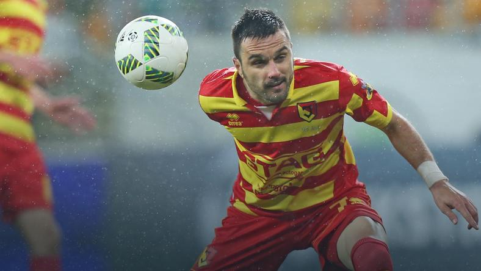

| Strona główna | O nas | Ekstraklasa | 1 liga |
Sztab szkoleniowy Jagiellonii Białystok podjął decyzję o przywrócenia Sebastiana Madery do pierwszej drużyny - poinformowano na stronie internetowej klubu z Podlasia. 30-letni obrońca przez trzy tygodnie trenował z zespołem rezerw.

- Obrońca żółto-czerwonych Sebastian Madera decyzją sztabu szkoleniowego został dziś przywrócony do treningów z pierwszym zespołem Jagiellonii Białystok. Przywrócenie do pierwszego zespołu Jagiellonii wynika z pomyślnego wyjaśnienia kwestii spornej pomiędzy Sebastianem Maderą, a sztabem szkoleniowym białostockiej drużyny - napisano w komunikacie.
Madera rozegrał w tym sezonie 23 mecze w Ekstraklasie. Zdobył w nich jedną bramkę. Wystąpił również w czterech meczach kwalifikacji do Ligi Europy i dwóch Pucharu Polski.
Drużyna prowadzona przez Michała Probierza zajmuje obecnie czwarte miejsce w grupie spadkowej. Pod nieobecność Madery na środku defensywy "agi występowali Guti, Marek Wasiluk, Igors Tarasovs i Dawid Szymonowicz.
Za: Jagiellonia.pl